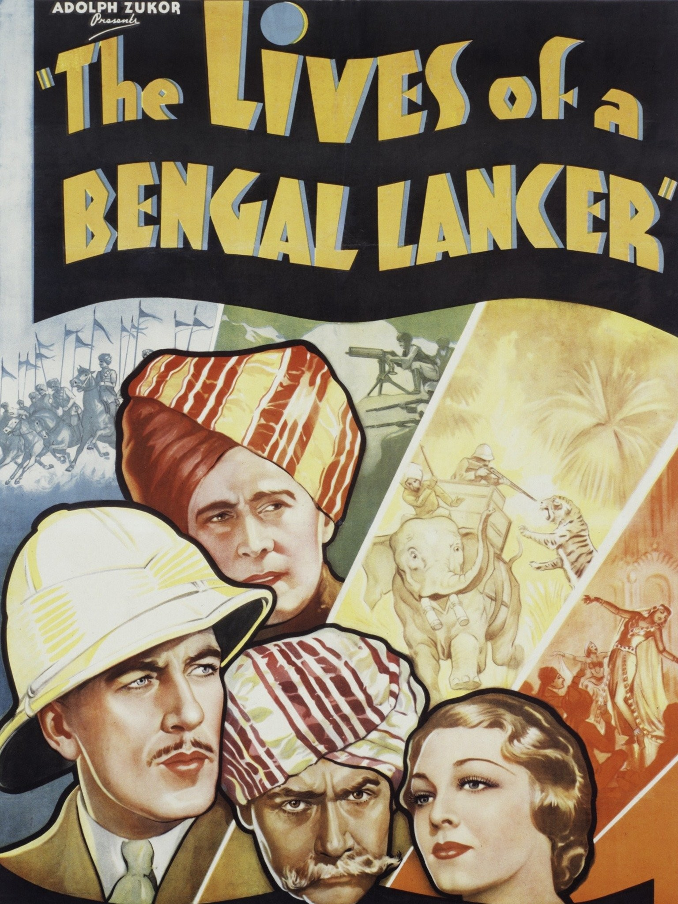

The Lives of a Bengal Lancer
8th Academy Awards
(Oscars 1936)
7 Nominations, 1 Award
| Nominations | ||
|---|---|---|
| Category | Nominees | Result |
| Outstanding Production | Paramount | Nominated |
| Directing | Henry Hathaway | Nominated |
| Assistant Director | Clem Beauchamp and Paul Wing | Won |
| Writing (Screenplay) | Achmed Abdullah, Grover Jones, John L. Balderston, Waldemar Young, and William Slavens McNutt | Nominated |
| Film Editing | Ellsworth Hoagland | Nominated |
| Art Direction | Hans Dreier and Roland Anderson | Nominated |
| Sound Recording | Franklin B. Hansen | Nominated |